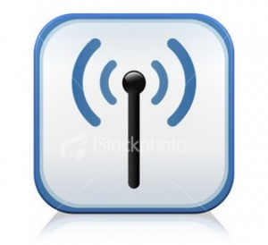

Transmisión de Información
La comunicación es la transferencia de información de un lugar a otro, mientras que la información es un patrón físico al cual se le ha asignado un significado comúnmente acordado. El patrón debe ser único, separado y distinto, capaz de ser enviado por un transmisor y de ser detectado y entendido por un receptor. Así, la información es transmitida a través de señales eléctricas u ópticas utilizando un canal de comunicación o medio de transmisión.
{kind=link}
Transmisión Análoga: En este tipo de transmisión las señales trabajan en forma de frecuencias oscilantes por medio de las cuales la información fluye de forma continua y constantes a través de los canales de comunicación lo que hace que la transmisión sea eficiente debido a la continuidad en el flujo de las mismas, este tipo de señales es propia de las redes de telecomunicaciones telefónicas, radiales, televisivas, entre otras.
Transmisión Digital: son en forma de líneas quebradas, en la que cada subida o bajada de la línea representa el aumento o disminución del voltaje, estas señales trabajan con un contador y un reloj los encargados de dirigir los pulsos digitales de la línea.
En la transmisión digital existe dos ventajas estas son:
- El ruido no se acumula en los repetidores.
- El formato digital se adapta por sí mismo de manera ideal a la tecnología de estados sólidos, particularmente en los circuitos integrados.
Medios de transmisión:
Es el enlace (eléctricos u ópticos) entre el transmisor y el receptor y sirve de puente de unión entre la fuente y e l destino.
Los medios de transmisión más importantes, se clasifican en dos tipos: los medios alambricos o medios tangibles confinados y los inalámbricos o medios no confinados.
Medios confinados: la mejor manera de clasificar este tipo de medios es como medios tangibles sobre conductos de cobre, fibras de vidrio o contenedores metálicos. Una de sus principales características es que se ven limitados por el medio y no sales de él, excepto por algunas pérdidas.
- El alambre
- El cable coaxial de doble forro
- El cable par trenzado
- Fibra óptica
Medios confinados: Los medios que utilizan el aire como medio de transmisión son los medios no confinados. Cada uno viene siendo un servicio que utiliza una banda del espectro de frecuencia. A todo el rango de frecuencia se les conoce, espectro electromagnético, el cual ha sido un recurso muy apreciado y, como es limitado, tiene que ser administrado y regulado.
La ventaja de usar este tipo de bandas de frecuencias para comunicaciones locales permite que decenas de estaciones de radios de FM y televisoras en ciudades diferentes puedan usar frecuencias idénticas sin causar interferencias entre ellas, (microondas terrestres).
Modos de transmisión:
Se refiere al número de unidades de información (bits) elementales que se pueden traducir simultáneamente a través de los canales de comunicación. De hecho, los procesadores (y por lo tanto, los equipos en general) nunca procesan (en el caso de los procesadores actuales) un solo bit al mismo tiempo. Generalmente son capaces de procesar varios (la mayoría de la veces 8 bits: 1 byte) y por este motivo, las conexiones básicas de un equipo son conexiones paralelas.
Conexiones en serie y paralelas:
- Conexión paralela: Consiste en transmisiones simultáneas N cantidades de bits se envían simultáneamente a través de diferentes canales N (un canal puede ser, por ejemplo, un alambre, un cable o cualquier otro medio físico). La conexión paralela en equipos del tipo PC generalmente requiere 10 alambres.
- Conexión en serie: los datos se transmiten a un bit por vez a través del canal de transmisión. Sin embargo, ya que muchos procesadores procesan los datos paralelos, el transmisor necesita transformar los datos paralelos en grandes en datos seriales y el receptor necesita hacer lo contrario.
Transmisión sincrónica y asincrónica:
- Transmisión Asincrónica: En la que cada carácter se envía en intervalos de tipos irregulares (por ejemplo, un usuario enviando caracteres que se introducen en el teclado en tiempo real). Así, por ejemplo, imagine que se transmite un solo bit durante un largo periodo de silencio… El receptor no será capaz de darse cuenta si esto es 00010000,10000000 o 00000100.
- Transmisión Sincrónica: El transmisor y le receptor están sincronizador con el mismo reloj. el receptor recibe continuamente (incluso hasta cuando no hay transmisión de bits) la información a la misma velocidad que el transmisor la envía. Es por este motivo que el receptor y el transmisor están sincronizados a la misma velocidad.
Dirección de transmisión:
Según el sentido de la transmisión podemos encontrar 3 tipos diferentes:
- simplex: Este modo de transmisión permite que la información discurra en solo sentido y de forma permanente, con esta formula es difícil la corrección de errores causados por deficiencias de líneas. Como ejemplos de la vida diaria tenemos, la televisión y la radio.
- Half dúplex: En este modo, la transmisión fluye como en el anterior, o sea, en un único sentido de la transmisión de datos, pero de una manera permanente, pues el sentido puede cambiar, como ejemplo tenemos los Walkis Talkis.
{kind=link}
Full dúplex: Es el método de comunicación más aconsejable, puesto que en todo momento la comunicación puede ser en dos sentidos posibles y así pueden corregir los errores de manera instantánea y permanente. El ejemplo típico seria el teléfono.